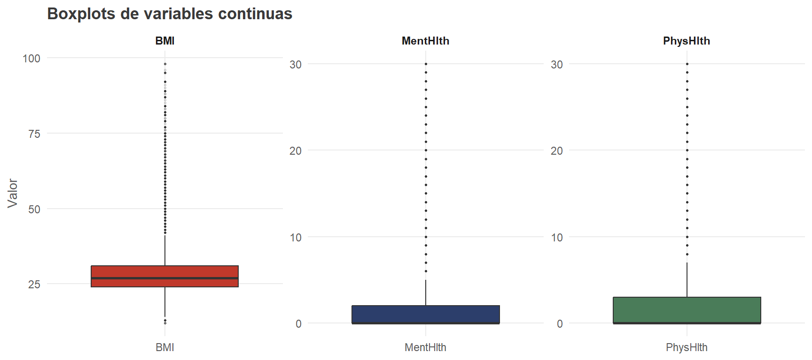

Capítulo 2 Limpieza y validación de datos
Antes de iniciar el análisis exploratorio se verifica la integridad del dataset: ausencia de valores faltantes, duplicados y valores fuera del rango esperado para cada variable.
2.1 Conversión de tipos
df_1 <- df
# Variable objetivo
df_1$HeartDiseaseorAttack <- factor(
df_1$HeartDiseaseorAttack,
levels = c(0, 1),
labels = c("Sin enfermedad cardíaca", "Con enfermedad cardíaca")
)
# Variables binarias
binary_labels <- list(
HighBP = c("Sin hipertensión", "Con hipertensión"),
HighChol = c("Sin colesterol alto", "Con colesterol alto"),
CholCheck = c("Sin chequeo en 5 años", "Con chequeo en 5 años"),
Smoker = c("No fumador", "Fumador"),
Stroke = c("Sin ACV", "Con ACV"),
PhysActivity = c("Sin actividad física", "Con actividad física"),
Fruits = c("No consume frutas diario", "Consume frutas diario"),
Veggies = c("No consume verduras diario", "Consume verduras diario"),
HvyAlcoholConsump = c("No consumo alto alcohol", "Consumo alto alcohol"),
AnyHealthcare = c("Sin cobertura médica", "Con cobertura médica"),
NoDocbcCost = c("Sin barrera económica", "Con barrera económica"),
DiffWalk = c("Sin dificultad al caminar", "Con dificultad al caminar"),
Sex = c("Mujer", "Hombre")
)
for (col in names(binary_labels)) {
df_1[[col]] <- factor(df_1[[col]], levels = c(0, 1), labels = binary_labels[[col]])
}
# Ordinales
df_1$Diabetes <- factor(df_1$Diabetes, levels = 0:2, ordered = TRUE,
labels = c("Sin diabetes","Prediabetes","Diabetes confirmada"))
df_1$GenHlth <- factor(df_1$GenHlth, levels = 1:5, ordered = TRUE,
labels = c("Excelente","Muy buena","Buena","Regular","Mala"))
age_labels <- c("18–24","25–29","30–34","35–39","40–44","45–49",
"50–54","55–59","60–64","65–69","70–74","75–79","80+")
df_1$Age <- factor(df_1$Age, levels = 1:13, labels = age_labels, ordered = TRUE)
edu_labels <- c("Nunca asistió","Primaria incompleta","Secundaria incompleta",
"Secundaria completa","Universidad incompleta","Universidad completa")
df_1$Education <- factor(df_1$Education, levels = 1:6, labels = edu_labels, ordered = TRUE)
inc_labels <- c("< $10,000","$10,000–15,000","$15,000–20,000","$20,000–25,000",
"$25,000–35,000","$35,000–50,000","$50,000–75,000","$75,000+")
df_1$Income <- factor(df_1$Income, levels = 1:8, labels = inc_labels, ordered = TRUE)2.2 Valores nulos
## Total de valores nulos: 0No se detectaron valores nulos en ninguna de las 22 variables, resultado consistente con el proceso de limpieza previo aplicado sobre el BRFSS 2015.
2.3 Registros duplicados
total <- nrow(df)
duplicados <- sum(duplicated(df))
porcentaje <- round(duplicados / total * 100, 2)
data.frame(
Metrica = c("Total de registros", "Registros duplicados", "Porcentaje"),
Valor = c(format(total, big.mark=","),
format(duplicados, big.mark=","),
paste0(porcentaje, "%"))
) |>
kable(col.names = c("Métrica","Valor")) |>
kable_styling(bootstrap_options = "striped", full_width = FALSE)| Métrica | Valor |
|---|---|
| Total de registros | 253,680 |
| Registros duplicados | 23,899 |
| Porcentaje | 9.42% |
Se identificaron 23.899 registros duplicados (9.43%). Se tomó la decisión de mantenerlos: al tratarse de una encuesta con mayoría de variables binarias, es estadísticamente esperable que múltiples individuos compartan exactamente el mismo perfil de respuestas sin que esto represente un error de captura.
2.4 Verificación de rangos
rangos_esperados <- list(
HeartDiseaseorAttack = c(0,1), HighBP = c(0,1), HighChol = c(0,1),
CholCheck = c(0,1), BMI = c(12,98), Smoker = c(0,1), Stroke = c(0,1),
Diabetes = c(0,2), PhysActivity = c(0,1), Fruits = c(0,1),
Veggies = c(0,1), HvyAlcoholConsump = c(0,1), AnyHealthcare = c(0,1),
NoDocbcCost = c(0,1), GenHlth = c(1,5), MentHlth = c(0,30),
PhysHlth = c(0,30), DiffWalk = c(0,1), Sex = c(0,1),
Age = c(1,13), Education = c(1,6), Income = c(1,8)
)
rangos_df <- do.call(rbind, lapply(names(rangos_esperados), function(col) {
data.frame(
Variable = col,
Min_esp = rangos_esperados[[col]][1],
Max_esp = rangos_esperados[[col]][2],
Min_real = min(df[[col]]),
Max_real = max(df[[col]]),
Estado = ifelse(min(df[[col]]) >= rangos_esperados[[col]][1] &
max(df[[col]]) <= rangos_esperados[[col]][2], "✓ OK", "✗ Error")
)
}))
kable(rangos_df, caption = "Verificación de rangos esperados por variable") |>
kable_styling(bootstrap_options = c("striped","condensed"),
full_width = FALSE, font_size = 11) |>
column_spec(6, color = "white",
background = ifelse(rangos_df$Estado == "✓ OK", "#4A7C59", "#C0392B"))| Variable | Min_esp | Max_esp | Min_real | Max_real | Estado |
|---|---|---|---|---|---|
| HeartDiseaseorAttack | 0 | 1 | 0 | 1 | ✓ OK |
| HighBP | 0 | 1 | 0 | 1 | ✓ OK |
| HighChol | 0 | 1 | 0 | 1 | ✓ OK |
| CholCheck | 0 | 1 | 0 | 1 | ✓ OK |
| BMI | 12 | 98 | 12 | 98 | ✓ OK |
| Smoker | 0 | 1 | 0 | 1 | ✓ OK |
| Stroke | 0 | 1 | 0 | 1 | ✓ OK |
| Diabetes | 0 | 2 | 0 | 2 | ✓ OK |
| PhysActivity | 0 | 1 | 0 | 1 | ✓ OK |
| Fruits | 0 | 1 | 0 | 1 | ✓ OK |
| Veggies | 0 | 1 | 0 | 1 | ✓ OK |
| HvyAlcoholConsump | 0 | 1 | 0 | 1 | ✓ OK |
| AnyHealthcare | 0 | 1 | 0 | 1 | ✓ OK |
| NoDocbcCost | 0 | 1 | 0 | 1 | ✓ OK |
| GenHlth | 1 | 5 | 1 | 5 | ✓ OK |
| MentHlth | 0 | 30 | 0 | 30 | ✓ OK |
| PhysHlth | 0 | 30 | 0 | 30 | ✓ OK |
| DiffWalk | 0 | 1 | 0 | 1 | ✓ OK |
| Sex | 0 | 1 | 0 | 1 | ✓ OK |
| Age | 1 | 13 | 1 | 13 | ✓ OK |
| Education | 1 | 6 | 1 | 6 | ✓ OK |
| Income | 1 | 8 | 1 | 8 | ✓ OK |
Las 22 variables se encuentran dentro de los rangos esperados.
2.5 Análisis de valores atípicos
El análisis de outliers aplica únicamente a las variables continuas BMI, MentHlth y PhysHlth, usando el criterio de Tukey (Q1 − 1.5·IQR / Q3 + 1.5·IQR).
resumen_outliers <- do.call(rbind, lapply(continuous_vars, function(v) {
q1 <- quantile(df[[v]], 0.25)
q3 <- quantile(df[[v]], 0.75)
iqr <- q3 - q1
lo <- q1 - 1.5 * iqr
hi <- q3 + 1.5 * iqr
n_out <- sum(df[[v]] < lo | df[[v]] > hi)
data.frame(Variable = v, Q1 = q1, Q3 = q3, IQR = iqr,
Lim_inf = round(lo,2), Lim_sup = round(hi,2),
N_outliers = n_out,
Pct = paste0(round(n_out/nrow(df)*100, 2), "%"))
}))
kable(resumen_outliers,
col.names = c("Variable","Q1","Q3","IQR","Lím. inf.","Lím. sup.","N° outliers","%"),
caption = "Resumen de valores atípicos (criterio de Tukey)") |>
kable_styling(bootstrap_options = c("striped","hover"), full_width = FALSE)| Variable | Q1 | Q3 | IQR | Lím. inf. | Lím. sup. | N° outliers | % | |
|---|---|---|---|---|---|---|---|---|
| 25% | BMI | 24 | 31 | 7 | 13.5 | 41.5 | 9847 | 3.88% |
| 25%1 | MentHlth | 0 | 2 | 2 | -3.0 | 5.0 | 36208 | 14.27% |
| 25%2 | PhysHlth | 0 | 3 | 3 | -4.5 | 7.5 | 40949 | 16.14% |
df_long <- df |>
select(all_of(continuous_vars)) |>
pivot_longer(everything(), names_to = "Variable", values_to = "Valor")
ggplot(df_long, aes(x = Variable, y = Valor, fill = Variable)) +
geom_boxplot(outlier.size = 0.5, outlier.alpha = 0.15) +
scale_fill_manual(values = c(riesgo_color, nude_palette[2], "#4A7C59")) +
facet_wrap(~Variable, scales = "free") +
labs(title = "Boxplots de variables continuas", x = NULL, y = "Valor") +
theme(legend.position = "none",
strip.text = element_text(face = "bold"))
Figure 2.1: Distribución de variables continuas con outliers
Decisión: No se aplica ningún tratamiento. Los valores extremos corresponden a individuos reales con perfiles de salud severos; su exclusión introduciría sesgo de selección.